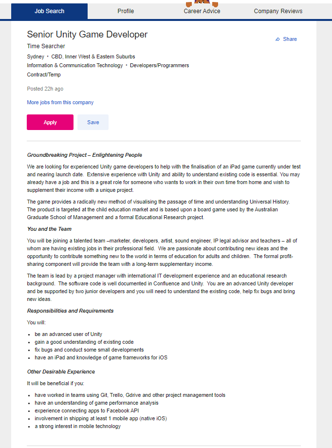

Basically, this job is using Unity to create an iPad game. This job is appealing to me because I think that game development would be a more interesting and enjoyable career path than most of the other jobs out there. However, I don’t have any experience with game development so this is just speculation.
You would need to be quite fluent with using Unity for game creation specifically with iPad games and enabling it to work with Facebook. From memory, I think Unity uses C# so id assume you would have to know that to a pretty high level as well. You would also have to be able to work well with the other people involved in the project.
Literally none, I’m a noob lol 😝. That’s why I’m taking this course though. To change that
Well, the first step would probably be finishing this course. Hopefully I would have covered most of the relevant areas such as programming and game development. Assuming that I wouldn’t have specifically covered Unity and C# I would have to learn those as well. It would also be preferable to have some real job experience working on similar smaller projects as well.
Back to Homepage